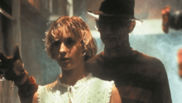

The 1980s saw the rise of the slasher genre, with masked killers and excessive gore dominating the decade. Practical effects reached new heights, creating unforgettable horror imagery.
Stanley Kubrick’s adaptation of Stephen King’s novel was a masterclass in psychological horror, with Jack Nicholson’s haunting performance, unsettling cinematography, and a slow-burning sense of dread. Its ambiguous storytelling and eerie atmosphere have made it one of horror’s most analyzed films.
John Carpenter’s paranoid horror masterpiece showcased groundbreaking practical effects, creating grotesque and nightmarish transformations. Its tense, isolated setting and themes of mistrust and survival turned it into a cult classic, influencing generations of horror and sci-fi films.
Wes Craven introduced Freddy Krueger, a burned killer who haunts and murders victims in their dreams. His supernatural abilities, grotesque appearance, and dark humor set the film apart from other slashers, making Freddy one of horror’s most iconic villains.
Clive Barker’s dark and twisted horror film introduced the Cenobites, otherworldly beings who blur the line between pain and pleasure. Its grotesque imagery, disturbing mythology, and exploration of human desire and suffering cemented it as a cult classic.

| Nombre | ID | Carrera | Correo |
|---|---|---|---|
| Maria Jose Arévalo | 1094044725 | Jurisprudencia | mariaj.arevalo@urosario.edu.co |
| Daniela Cortes Rodriguez | 1095550727 | Jurisprudencia | daniela.cortesro@urosario.edu.co |